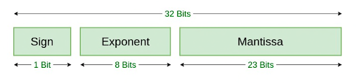
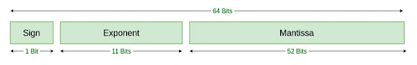

p = 22 / 7 = 3.142857142857143Lecture 1: Floating point numbers, Conditioning
Jamie Haddock
Floating-point numbers
What are floating-point numbers?
The real numbers \(\mathbb{R}\) are infinite in two ways:
- the numbers within are unbounded, and
- between any two real numbers that are not equal, there are infinitely many real numbers.
In computation, the second type of infiniteness has many consequences!
Note that computers necessarily have finite memory and thus cannot exactly represent all real numbers.
Exercise: How many numbers?
How many real numbers can be represented with 32 bits1 (“binary digits”)?
Answer:
\(2^{32}\)Exercise: Which numbers?
Given 32 bits (“binary digits”), which numbers are represented?
Answer:
We don’t know!There are a finite number of real numbers that can be represented in memory, and there are many sets of numbers that one can choose to represent.
Definition: Floating-point numbers
The set \(\mathbb{F}\) of floating-point numbers consists of zero and all numbers of the form \[\pm (1 + f) \times 2^n,\] where \(n\) is an integer called the exponent, and \(1 + f\) is the mantissa or significand, in which \(f\) is a binary fraction, \[f = \sum_{i=1}^d b_i 2^{-i}, \quad\quad b_i \in \{0,1\},\] for a fixed integer \(d\) called the binary precision.1
Note that we may rewrite \(f = 2^{-d} \sum_{i=1}^d b_i 2^{d-i} = 2^{-d} z\) where \(z \in \{0, 1, \cdots, 2^d - 1\}.\)
Exercise:
How many floating-point numbers are there in \([2^n, 2^{n+1})\)?
Answer:
There are \(2^d\) floating-point numbers in this interval!Note:
As \(n\) grows, the gap between consecutive floating-point numbers also grows!
Definition: Machine epsilon
For a floating-point set with \(d\) binary digits of precision, machine epsilon (or machine precision) is \(\epsilon_{\text{mach}} = 2^{-d}.\)
Note that this is the distance between \(1\) and the smallest element of \(\mathbb{F}\) greater than \(1\), \(1 + 2^{-d}\).
It will be useful to be able to represent which element of \(\mathbb{F}\) represents a given real number.
Definition: Floating-point rounding function
Given a real number \(x\), the rounding function \(\text{fl}(x)\) outputs the element of \(\mathbb{F}\) nearest to \(x\).
The distance between consecutive floating-point numbers in \([2^n, 2^{n+1})\) is \[2^n\epsilon_{\text{mach}} = 2^{n-d}.\] Thus, for real \(x \in [2^n, 2^{n+1})\) we have the bound \[|\text{fl}(x) - x| \le \frac12 2^n \epsilon_{\text{mach}} \le \frac12 \epsilon_{\text{mach}} |x|.\]
Precision and Accuracy
Accuracy
The accuracy of an approximation \(\tilde{x}\) to the number of interest \(x\). The floating-point number approximation \(\tilde{x}\) is represented using \(d\) binary digits, but not all of these binary digits may accurately represent (agree) with the number of interest \(x\) (which we may be unable to represent exactly as a floating-point number).
Definition:
The absolute accuracy of \(\tilde{x}\) is \(|\tilde{x} - x|\).
Definition:
The relative accuracy of \(\tilde{x}\) is \(\frac{|\tilde{x} - x|}{|x|}\).
The number of accurate digits is \[-\log_{10} \frac{|\tilde{x} - x|}{|x|}.\]
Example: Approximation to \(\pi\)
Precision
The precision of a floating-point number is always \(d\) binary digits. This is a measure between floating-point numbers.
IEEE 754 Standard
IEEE double and single precision
In 1985, the IEEE set the standard (IEEE 754) for binary and decimal floating point numbers and algorithms for rounding arithmetic operations, which are (generally) followed by all major computer manufacturers.


Exercise:
- How many bits would be necessary to represent sign information for a complex number \(a + bi\)?
- How many distinct exponents can be represented in double precision and which exponents are they?
Answer:
- We would need two bits to keep track of the sign of \(a\) and the sign of \(b\).
- In double precision, there are \(2^{11}\) distinct exponents, but we don’t know which numbers they are!
The IEEE double precision floating point number has value \[(-1)^s 2^{c - 1023} (1 + f),\]
where
- sign \(s\) is the binary number \(0\) or \(1\)
- characteristic \(c\) is the binary number given by its bits (in the usual way) and 1023 is subtracted to yield the exponent
- mantissa \(f\) is the binary fraction given by its bits (following the “decimal point”)
Note:
In double precision, \[\epsilon_{\text{mach}} = 2^{-52} \approx 2.2 \times 10^{-16}.\]
Exercise:
Which real numbers are represented by the IEEE double precision number \(0 \; 10000000001 \; 10\cdots0\)?
Answer:
- First, the exact decimal number this represents has \[c = 1 \times 2^{10} + 0 \times 2^{9} + \cdots + 0 \times 2^1 + 1 \times 2^0 = 1024 + 1 = 1025,\] \[f = 1 \times 2^{-1} + 0 \times 2^{-2} + \cdots + 0 \times 2^{-52},\] and so it is \((-1)^0 2^{1025 - 1023} (1 + 1/2) = 6.\)
- The next smallest representable number is \[(-1)^0 2^{1025 - 1023} (1 + 1/2 - (1/2)^{-52}) = 6 - (1/2)^{50}.\]
- The next largest representable number is \(6 + (1/2)^{50}.\)
- Thus, the interval of real numbers closest to this machine number is \[(6 - (1/2)^{51}, 6 + (1/2)^{51}).\]
The Julia command for double precision \(\epsilon_{\text{mach}}\) is eps(). Recall that this value is proportional to the spacing between adjacent floating-point values at 1.0.
eps() = 2.220446049250313e-16
eps(1.0) = 2.220446049250313e-16
log2(eps()) = -52.0We can also see the next floating-point number larger than a given value using nextfloat().
nextfloat(161.8) = 161.80000000000004
nextfloat(161.8) - 161.8 = 2.842170943040401e-14Like other languages, Julia has different types, which is very important for numerical computing (as we’ll see in more detail later)!
The standard floating-point representation is Float64, which is IEEE double precision using 64 bits.
3-element Vector{String}:
"0011111111110000000000000000000000000000000000000000000000000000"
"1011111111110000000000000000000000000000000000000000000000000000"
"0100000000000000000000000000000000000000000000000000000000000000"Exercise: What do you notice?
What do you notice about the bitstrings above?
Answer:
- The first bit gives the sign of the number.
- The next 11 bits determine the exponent (remember to subtract 1023).
- The last 52 bits determine the mantissa (binary fraction).
Note that the representation of Int64 is different!
4-element Vector{String}:
"0000000000000000000000000000000000000000000000000000000000000001"
"1111111111111111111111111111111111111111111111111111111111111111"
"0000000000000000000000000000000000000000000000000000000000000010"
"1111111111111111111111111111111111111111111111111111111111111110"The definition of floating-point numbers \(\mathbb{F}\) given on slide 5 did not put limits on the exponent, but in double precision we have \(-1022 \le n \le 1023\).
- Values larger than \(2^{1024}\) (either input or computed) are said to overflow and will be instead represented by the value
Infin memory.
- Values smaller than \(2^{-1022}\) are said to underflow to zero.
You should also be aware of one more double-precision value: NaN, which stand for not a number. This value is adopted after undefined arithmetic operations (like division by zero or division by values in underflow).
Floating-point Arithmetic
Computer arithmetic
In a computer, arithmetic operations operate on floating-point numbers and return floating-point results. Perhaps the most important thing for you to know is that while operations \(+, -, \times, /\) produce exact results, the machine-analog operations, which we will denote \(\oplus, \ominus, \otimes, \oslash\), are not guaranteed to do so.
Recall that there is no double-precision number between \(1\) and \(1 + \epsilon_{\text{mach}}\).
Computer addition is not associative!
Fact
Two mathematically equivalent results need not be equal when computed in floating point arithmetic. One would hope that they be relatively close together.
An important job of one working in scientific computation is to ensure that results are computed in such a way that they are close together!
Problems and Conditioning
Example
Think about the problem of subtracting \(1\) from a number \(x\); this result is given by the function \(f(x) = x - 1\). On a computer, \(x\) is represented by \(\text{fl}(x)\) and we have \(\text{fl}(x) = x(1 + \epsilon)\) for some \(|\epsilon| < \epsilon_{\text{mach}}/2\).
Even if the floating-point arithmetic addition is exact, so \(x \ominus 1 = x(1 + \epsilon) - 1\), the relative error in this result is \[\frac{|(x + \epsilon x - 1) - (x-1)|}{|x-1|} = \frac{|\epsilon x|}{|x-1|}.\] This relative error can be unboundedly poor by taking \(x\) very close to \(1\).
Definition:
Subtractive cancellation is a loss of accuracy that occurs when two numbers add or subtract to give a result that is much smaller in magnitude than the inputs. It is one of the most common mechanisms for causing dramatic growth of errors in floating-point computations!
Subtractive cancellation renders some of the digits in our floating-point representations essentially meaningless, since they are zeroed in our calculation.
Problems
Consider a problem – this is a calculation or task for which you might write an algorithm. We’ll represent a problem as a function \(f\) that maps a real data value \(x\) to a real result \(f(x)\), and denote this \(f: \mathbb{R} \rightarrow \mathbb{R}\). Everything here denotes exact calculations – data \(x\) is represented exactly and the exact result \(f(x)\) is computed exactly.
In a computer, the problem \(f\) will be approximated in floating-point. Here the data \(x\) is represented as an input \(\tilde{x} = \text{fl}(x)\).
Realistically the calculations required to solve the problem \(f\) will also be inexact and so we might instead solve a different problem \(\tilde{f}\).
Conditioning
Setting aside the sources of error in the problem calculations, we’ll consider the ratio of the relative errors of the result and the data, \[\frac{\frac{|f(x) - f(\tilde{x})|}{|f(x)|}}{\frac{|x - \tilde{x}|}{|x|}}.\]
Exercise: Rewrite this expression
Show that for the floating-point approximation to \(x\), \(\tilde{x}\), for some \(|\epsilon| \le \epsilon_{\text{mach}}/2,\) this ratio is equal to \[\frac{|f(x) - f(x + \epsilon x)|}{|\epsilon f(x)|}.\]
Answer:
We have \(\tilde{x} = x(1 + \epsilon)\) and thus \[\frac{|f(x) - f(\tilde{x})||x|}{|f(x)||x -\tilde{x}|} = \frac{|f(x) - f(x+\epsilon x)||x|}{|f(x)||\epsilon x|} = \frac{|f(x) - f(x + \epsilon x)|}{|\epsilon f(x)|}.\]Condition Number
Now, think about what would happen in a perfect computer where the floating-point representation is perfect, \(\epsilon \rightarrow 0\).
Definition: Condition number for scalar function
The relative condition number of a scalar function \(f(x)\) is \[\kappa_f(x) = \lim_{\epsilon \rightarrow 0} \frac{|f(x) - f(x + \epsilon x)|}{|\epsilon f(x)|}.\]
Exercise: Rewrite this expression
Assuming that \(f\) has a continuous derivative \(f'\), show that \(\kappa_f(x) = \left| \frac{x f'(x)}{f(x)} \right|.\)
Answer:
Using the definition of the derivative, we have \[\kappa_f(x) = \lim_{\epsilon \rightarrow 0} \left| \frac{f(x + \epsilon x) - f(x)}{\epsilon f(x)} \right| = \left| \frac{f(x + \epsilon x) - f(x)}{\epsilon x} \right| \left| \frac{x}{f(x)} \right| = \left| \frac{x f'(x)}{f(x)} \right|.\]Using the previous exercise, we see that the condition number for the problem of subtracting a constant number \(c\) from data \(x\), \(f(x) = x - c\), has condition number \[\kappa_f(x) = \left| \frac{(x)(1)}{x-c} \right| = \frac{|x|}{|x-c|}\] which is large when \(|x| \gg |x-c|\).
Note:
This is indicative of the risk of subtractive cancellation when \(x\) is nearby to \(c\)!
Exercise: What is the condition number?
Calculate the condition number of \(g(x) = cx\).
Answer:
We have \[\kappa_g(x) = \left| \frac{(x)(c)}{cx} \right| = 1.\]Multiplication has the same relative error in the result as in the data!
Estimating Error
If \(|\epsilon|\) is small, we expect \[\left| \frac{f(x + \epsilon x) - f(x)}{f(x)} \right| \approx \kappa_f(x) |\epsilon|.\] When the data \(x\) is perturbed by a small amount \(\epsilon\), the relative error in the result is magnified by a factor of \(\kappa_f(x)\).
Fact:
If \(\kappa_f(x) \approx 10^d\), then we expect to lose up to \(d\) decimal digits of accuracy in computing \(f(x)\) from \(x\).
When the condition number of a problem is large, we cannot expect errors in the result to remain comparable in size to roundoff error. This type of problem is called ill-conditioned. We say a problem \(f\) is ill-conditioned when \(\kappa_f(x) \gg 1\).
Some problems, such as \(f(x) = \sqrt{x}\), can have a condition number less than 1. However, every result in floating-point arithmetic is subject to rounding error at the relative level of \(\epsilon_{\text{mach}}\), so in practice, \(\kappa_f(x) < 1\) is no different from \(\kappa_f(x) = 1\).
Case Study: Conditioning
We’re going to consider the problem of calculating roots of a quadratic polynomial; that is finding values \(t\) such that \(at^2 + bt + c = 0\). We’ll start first by considering the conditioning of the problem, which we might write \(f([a,b,c]) = [r_1,r_2]\) for coefficients \(a, b, c\) and roots \(r_1, r_2\).
Since we’ve been thinking of conditioning for problems which are scalar functions, let’s think only of how \(r_1\) changes as we vary \(a\) and hold \(b\) and \(c\) fixed, that is \(f(a) = r_1\).
Now, noting that \(a r_1^2 + b r_1 + c = 0\), we may differentiate with respect to \(a\) and get \[r_1^2 + 2 a r_1 \frac{d r_1}{d a} + b \frac{d r_1}{d a} = 0.\]
Solving this for the derivative, we have \(\frac{d r_1}{d a} = \frac{-r_1^2}{2ar_1 + b},\) and thus, the conditioning is \[\kappa_f(a) = \left|\frac{a}{r_1} \frac{d r_1}{d a}\right| = \left| \frac{ar_1}{2ar_1 + b}\right| = \left| \frac{r_1}{r_1 - r_2}\right|.\]
Thus, the condition number of a root can be arbitrarily large!
Fact:
Roots of polynomials are ill-conditioned with respect to changes in the polynomial coefficients when the roots are much closer to one another than the origin.
The polynomial \(p(x) = \frac13 (x-1)(x-1-\epsilon)\) has roots \(1\) and \(1+\epsilon\). For small values of \(\epsilon,\) the roots are ill-conditioned.
Let’s now look at the relative error in \(r_1\)!